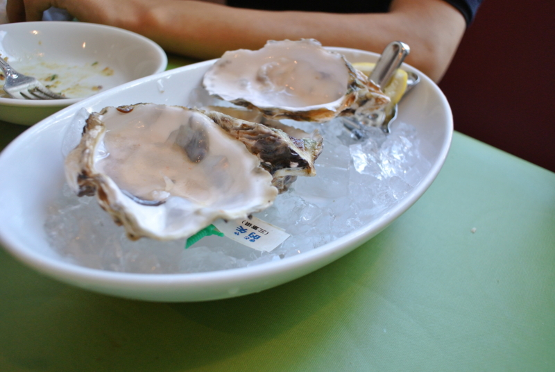
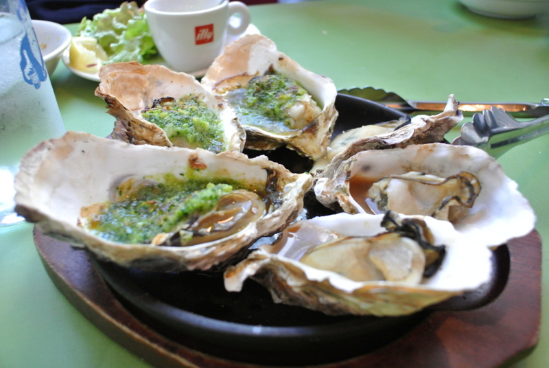
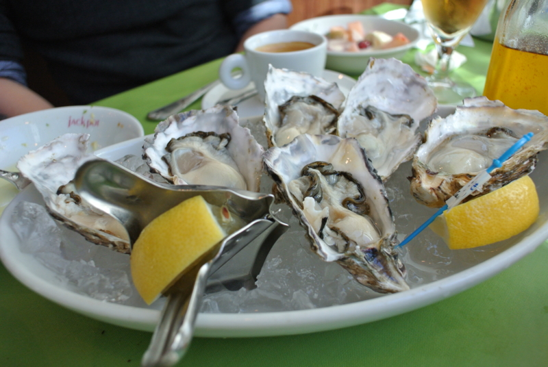
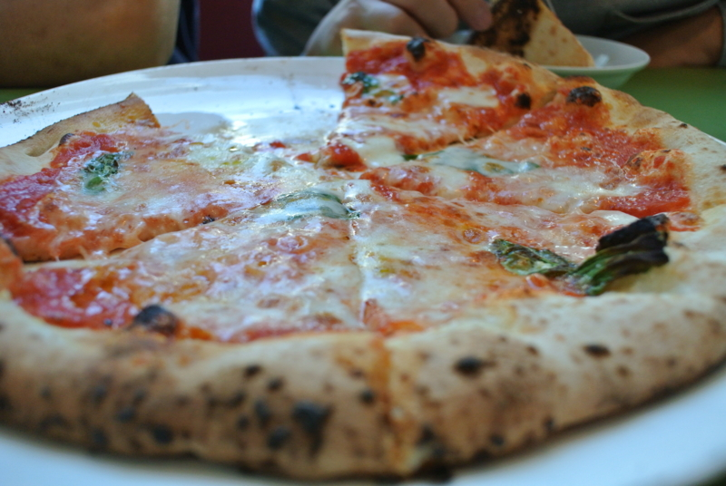

牡蠣パーティーしてきた。
執筆日時：

日曜日のお昼、友人とプチ忘年会をした。ノロウイルスの大流行も何のその、牡蠣ざんまいだ━━━━━━(ﾟ∀ﾟ)━━━━━━!!!!
（最初の一皿は、食べるのに夢中で写真を撮り忘れました）

ビールも白ワインもあけて、昼間っからやりたい放題。ちょっとはしゃぎ過ぎてうるさい客だったかもしれない。ごめんなさい。

なかでも結構気に入ったのがこのマルガリータ。ちゃんとした窯があるっぽくて、なかなか美味しかった。これにもちゃんと牡蠣がのっているんですよ。
今年はもう会うことないかな。直接は言いそびれたのだけど、よいお年を！
マイクロソフトの隣の下だった……プライベートできたのは初めてだ。